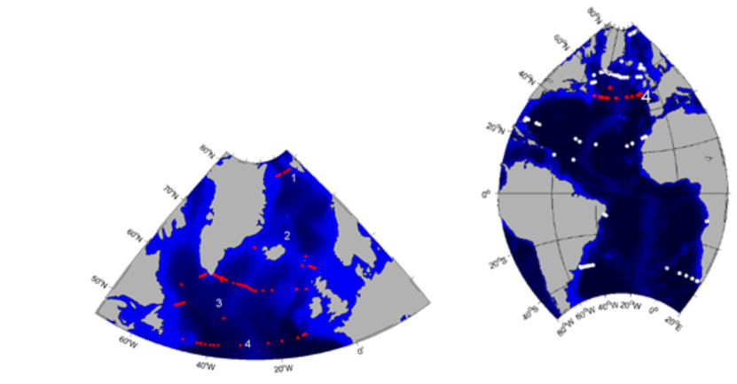
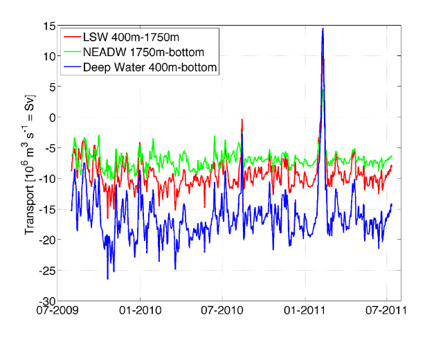

|
2. GSR Greenland Scotland Ridge 3. OSNAP Overturning in the Subpolar North Atlantic Program 4. NOAC North Atlantic Changes 6. MOVE Meridional Overturning Variability Experiment 8. SAMBA-SAMOC South Atlantic Meridional Overturning Circulation
|
NOAC North Atlantic Changeswww.ocean.uni-bremen.de

Brief description of the TMAThe goals of the NOAC array are: - Measure the flow of the North Atlantic Current (NAC) from the western into the eastern Atlantic, resolve interannual to multiannual variability. - Measure the meridional transport fluctuations of the major AMOC components (e.g. DWBC, NAC, Newfoundland Basin recirculation (NBR), eastern boundary current, northward flow of warm subtropical water in the eastern Atlantic) at 47°N/48°N. - Exploit the correlation between the directly measured total transports with altimeter data to expand the time series into the past until 1993. The array is located on the boundary between the subtropical and the subpolar North Atlantic and provides time series of the exchange between the gyres (Fig. 1). The array parallel to the Midatlantic Ridge provides the North Atlantic Current (NAC) flow from the western into the eastern Atlantic, and the eastern extension of the 47N array provides the means to understand the relative role of the NAC transport from the west versus the northward transport of warm and saline subtropical water across 47N. The northward NAC flow off Flemish Cap at 47N and the southward Newfoundland Basin recirculation (NBR) provides the net NAC transport into the western subpolar North Atlantic. The Deep Western Boundary Current transport time series together with the transport through Flemish pass measures the southward flow of deep water. The cross-basin velocity field time series together with the time series of the temporal and spatial high-resolution salinity and temperature fields obtained by combining Argo floats and altimetry allow to calculate meridional freshwater and heat transports. The 47N NOAC array is closely related to the OSNAP array (TMA 3) measuring the flow of North Atlantic water into the Nordic Seas and the array measuring the overflow into the subpolar North Atlantic between Greenland and Shetland (TMA 2). The OSNAP array measures the transports after the water mass has been modified south of the overflow regions and in the Labrador Sea. A comparison between the transports at the 47N NOAC array and the 26.5N RAPID array (TMA 5) might reveal whether any relation exists in their variability.Data products: volume transport time seriesFig. 2: Time series of volume transport of Labrador Sea water (LSW), Northeast Atlantic Deep Water (NEADW) and the total Deep Water measured on the western side of the array at 47°N. Transport data in NetCDF can be downloaded hereMertens, C., M. Rhein, M. Walter, C. W. Böning, E. Behrens, D. Kieke, R. Steinfeldt und U. Stöber (2014), Circulation and transports in the Newfoundland Basin, western subpolar North Atlantic, J. Geophys. Res., 119, 7772-7793, doi:10.1002/2014JC010019.
The array instrument data are available at Pangaea (doi.pangaea.de/10.1594/PANGAEA.864800) and at ftp://ftp.ifremer.fr/ifremer/oceansites/DATA/ and ftp://data.ndbc.noaa.gov/data/oceansites/DATA/ under subdirectory "NOAC".
PublicationsFischer, J., J. Karstensen, R. Zantopp, M. Visbeck, A. Biastoch, E. Behrens, C. Böning, D. Quadfasel, K. Jochumsen, H. Valdimarsson, S. Jonsson, H. P. Naomi, S. Bacon, S. Dye, M. Rhein, and C. Mertens (2015), Intra-seasonal variability of the Deep Western Boundary Current in the western subpolar North Atlantic. Prog. Oceanogr., 132(3), 233-249, doi:10.1016/j.pocean.2014.04.002. Mertens, C., M. Rhein, M. Walter, C. W. Böning, E. Behrens, D. Kieke, R. Steinfeldt, and U. Stöber (2014), Circulation and transports in the Newfoundland Basin, western subpolar North Atlantic, J. Geophys. Res., 119, 7772-7793, doi:10.1002/2014JC010019. Rhein, M., D. Kieke, S. Hüttl-Kabus, A. Roessler, C. Mertens, R. Meissner, B. Klein, C. W. Böning, and I. Yashayaev (2011), Deep-water formation, the subpolar gyre, and the meridional overturning circulation in the subpolar North Atlantic. Deep-Sea Res. II, 58(17-18), 1819-1832. Roessler, A., M. Rhein, D. Kieke und C. Mertens (2015), Long-term observations of North Atlantic Current transport at the gateway between western and eastern Atlantic, J. Geophys. Res., 120, doi:10.1002/2014JC010662. Schneider, L., D. Kieke, K. Jochumsen, E. Colbourne, I. Yashayaev, R. Steinfeldt, E. Varotsou, N. Serra, and M. Rhein (2015), Variability of Labrador Sea Water exported through Flemish Pass during 1993 - 2013, J. Geophys. Res., 120, 5514-5533, doi:10.1002/2015JC010939. Stendardo, I., M. Rhein, and R. Hollmann (2016), A high resolution salinity time series 1993-2012 in the North Atlantic from Argo and altimeter data, J. Geophys. Res., 121, 2523-2551, doi:10.1002/2015JC011439. Stendardo, I., D. Kieke, M. Rhein, N. Gruber, and R. Steinfeldt (2015), Interannual to decadal oxygen variability in the mid-depth water masses of the eastern North Atlantic, Deep-Sea Res. I, 95(1), 85-98. | ||||||||||||